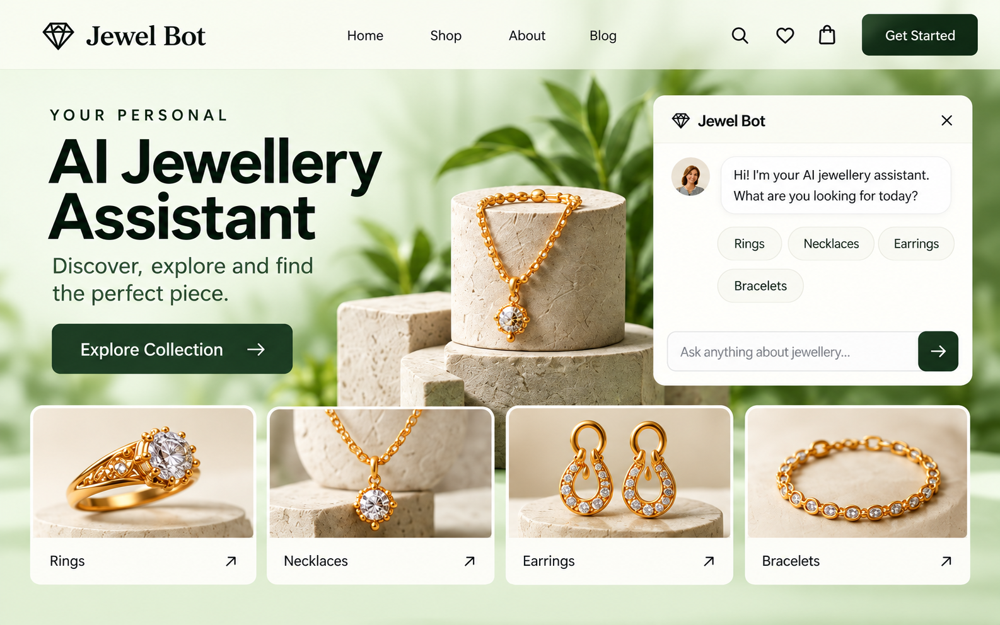
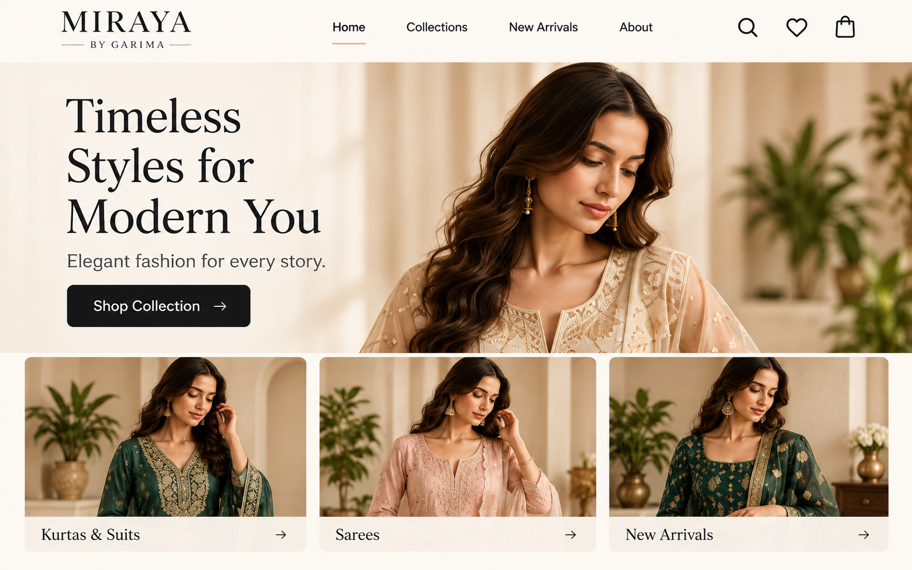

01-home-background.png
Home hero; use the portrait as a separate foreground layer.
1672 × 941 pxYash Paradkar · 11 reusable images. Click an image to open the original PNG.
Home hero; use the portrait as a separate foreground layer.
1672 × 941 px
About page; decorative scene sits at the right.
1672 × 941 px
Skills page; floating stack is in the upper-right.
1672 × 941 px
Work page; cube and metal band are in the upper-right.
1672 × 941 px
Contact page; envelope sits on the lower-left with form space on the right.
1672 × 941 pxAbout-page portrait with its dark photographic background.
1122 × 1402 pxForeground hero portrait with real PNG alpha transparency.
1086 × 1448 px · transparent PNG
Illustrative Jewel Bot project card preview.
1586 × 992 px
Illustrative Miraya by Garima project card preview.
1586 × 992 pxIllustrative Pankaj Overseas project card preview.
1586 × 992 pxWhite and lime YP monogram for dark backgrounds.
2172 × 724 px · transparent PNG